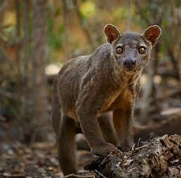

Cryptoprocta Ferox


Le Cryptoprocta Ferox, plus connu sous le nom de Fossa est un mammifère endémique considéré vulnérable de l’île de Madagascar.
L’animal se distingue par sa taille de 70cm à 80cm du bout du museau jusqu’à la base de la queue, en effet l’animal est considéré comme étant le plus grand mammifère carnivore de Madagascar ; autre caractéristique de l’animal est que l’animal partage beaucoup de trait avec les félins, en occurrence le Puma, en effet visuellement le Fossa est considéré comme un petit Puma.
Le Fossa se trouve dans les habitats forestier et se nourrit généralement de lémuriens, d’oiseau, de petit rongeur…